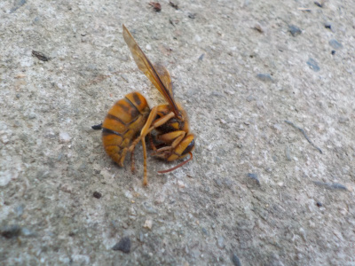
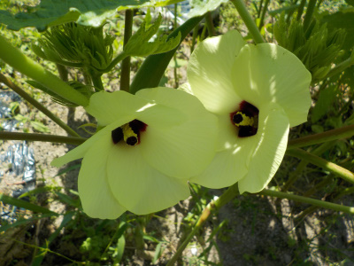
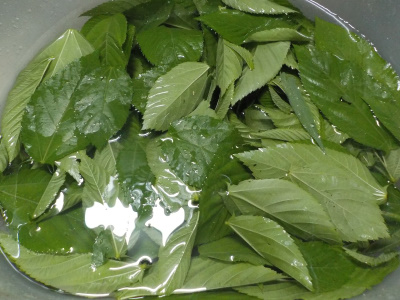
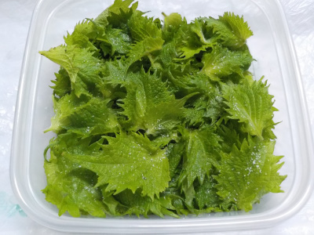
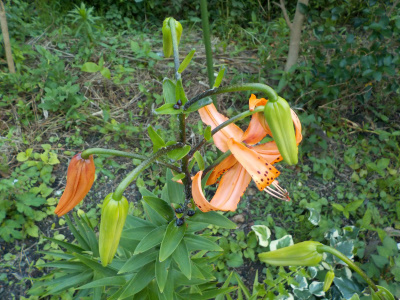
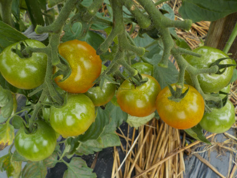
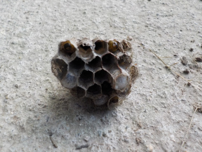
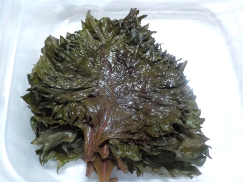

遊びで植物を育てよう
2023/07/30
このケブカスズメバチとかキイロスズメバチとかいうのを叩いています。

このスズメバチがよく飛んでて怖いので、近くに寄ってくるのはハエたたきで叩き落としています。
ネットで調べたら攻撃性が高いとありました。殺虫スプレーを使った方がいいかもしれません。
【7月TOP】
【日記TOP】
【園芸TOP】
2023/07/30
オクラの花が綺麗だったので写真を撮りました。

コンディションのいい花が並んでいました。葉っぱの上で咲いたら見栄えがいいのにな。
【7月TOP】
【日記TOP】
【園芸TOP】
2023/07/17
モロヘイヤを洗って茹でて刻みました。

夏のネバネバのモロヘイヤを収獲しました。
葉っぱちぎって、洗って、茹でて、細かく刻んでネバネバが出来ます。手間が掛かりますが、たぶん栄養があるんですよね。
簡単に食べれるオクラより栄養があって欲しいな。
【7月TOP】
【日記TOP】
【園芸TOP】
2023/07/11
赤シソの塩漬けがなくなりそうなので青シソの塩漬けを作りました。

赤シソの塩漬けは色々使い易くで、順調に減っています。
今度は青シソで塩漬けを作りました。
【7月TOP】
【日記TOP】
【園芸TOP】
2023/07/11
オニユリが咲く季節になりました。

オニユリが咲きだしました。もう夏ですね。
あー。夏までにやっておきたいことがあったけど、面倒で出来なかったなー。
【7月TOP】
【日記TOP】
【園芸TOP】
2023/07/09
大雨が降ったので、ちょっと青いトマトを収獲しました。

この写真だとちょっとオレンジがかったのを3個採りました。
たぶん放置してたら皮が割れます。
今回の大雨で、久しぶりに水没した道路を見ました。
【7月TOP】
【日記TOP】
【園芸TOP】
2023/07/02
アシナガバチに手を刺されました。

鎌で草刈りをしていたら、この巣の持ち主に手を刺されました。アシナガバチです。
凄く痛いってことはないんですが、手がパンパンに膨らんで指曲げにくくなりました。
お腹らへんも真っ赤になりました。後、あちこちがかゆいです。
また刺されないように、分厚い手袋とハエたたきを買おうと思いました。
【7月TOP】
【日記TOP】
【園芸TOP】
2023/07/01
赤紫蘇の塩漬けが緑色に変色しました。

赤紫蘇の赤が落ちちゃうと、なんか美味しそうに見えない。
味は美味しいので、コツコツ使って食べています。
【7月TOP】
【日記TOP】
【園芸TOP】
過去の日記
【2024年7月の日記】
【2023年7月の日記】
【2022年7月の日記】
【2021年7月の日記】
【2020年7月の日記】
【2019年7月の日記】
【2018年7月の日記】
【2017年7月の日記】
【2016年7月の日記】
【2015年7月の日記】
【2014年7月の日記】
【2013年7月の日記】
【2012年7月の日記】
【7月TOP】
【日記TOP】
【園芸TOP】
熱中症に注意しましょう。
【おいしいものを食べよう。】【しっかり寝よう。】
【ソロ活をしよう!】【季節感のあることをしよう。】【動画視聴はほどほどに。】【当サイトの全てのコンテンツは無断転載禁止です。】